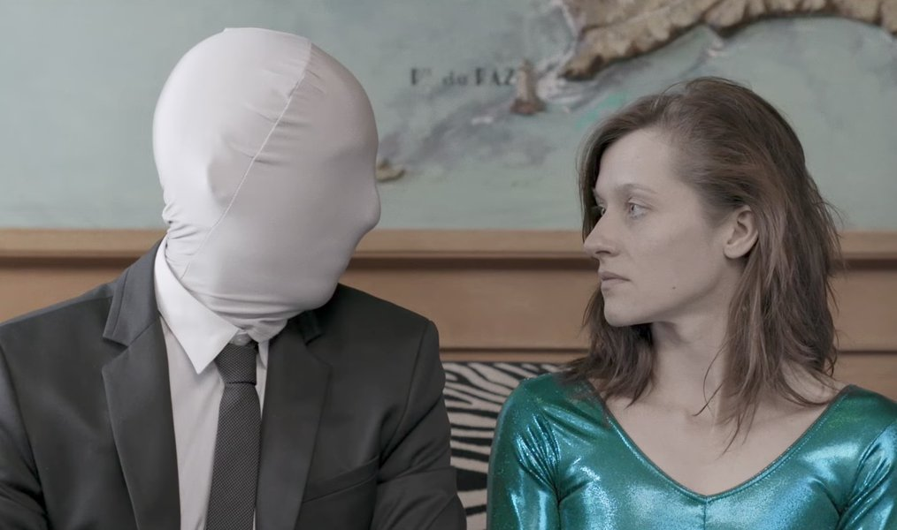

"Portique" d'Orville - Clip réalisé par Thierry Goron
(2017- 4'21)
"DÉAMBULATION POÉTIQUE"
Déambulation poétique dans un hôtel, lieu de passage, où des scènes troublantes et oniriques entrent en résonnance avec les mots de la chanson. Je fais des longueurs au centre nautique / Avant de monter à bord du Titanic. Comme fil rouge, la présence obsédante d’une acrobate, qui glisse le long d’une corde dans un jeu sensuel qui rappelle à la fois le bondage et la pendaison… Un clip au service de l’univers d’Orville, personnage masqué, dandy amer classe et trash, derrière lequel se cache Yannick Lucéa.
Source : Article KuB - Kultur Bretagne